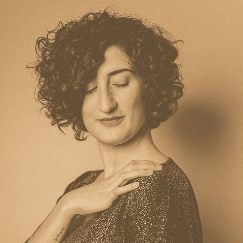
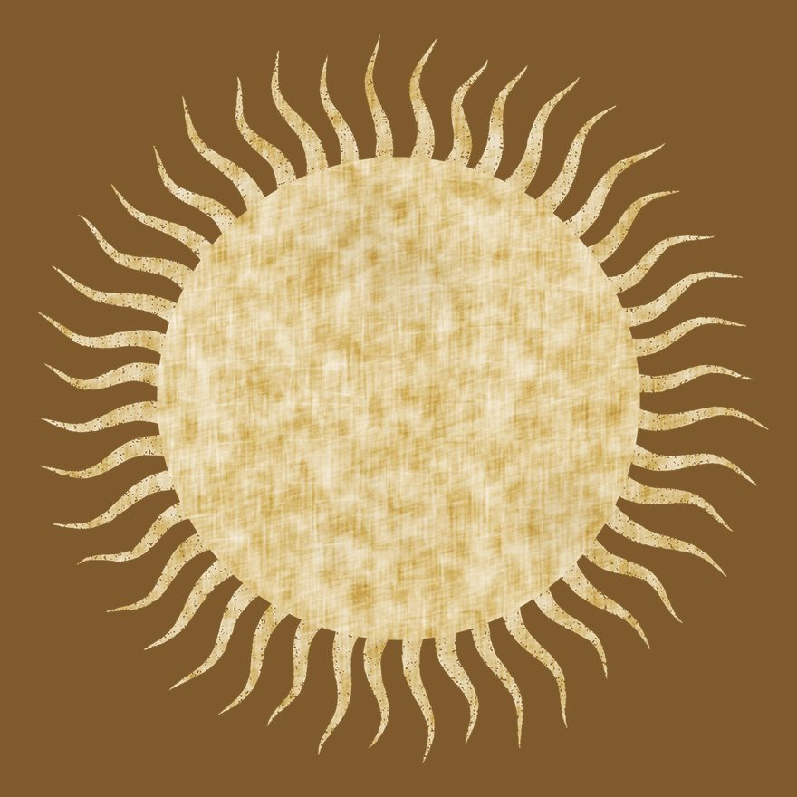
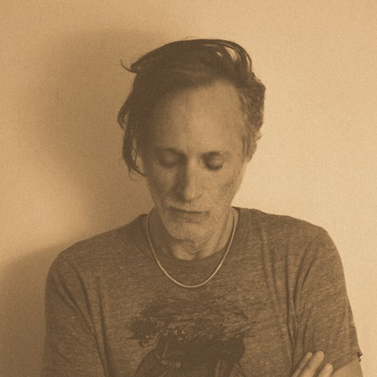

שישי 2.10
נועה ארגוב
חול המועד סוכות

חדש בקלאוד ספייס
פותחים את הסופ״ש במדיטציית סאונד עמוקה



דלתות 09:30 · מדיטציה 10:00 · שוקן 27, תל אביב
לאחר המדיטציה החלל יהפוך למרחב רגיעה עם מוזיקת רקע מוקפדת - מוזמנים להביא ספר טוב, כלי כתיבה וכל מה שעושה לכם טוב ונכון.
במפגש הקרוב נארח את נועה ארגוב, דיג׳יי, ובעברה שדרנית רדיו בגלגלצ ובהקצה, ואורחת קבועה במתחם התדר ובפסטיבלים מובילים. בתקלוטים שלה אפשר לשמוע מגוון רחב של השפעות: ממוזיקה ברזילאית, דרך ג׳אז, פ׳אנק וסול, ועד דיסקו, האוס ואלקטרוניקה. למרחב ה-CLOUD היא מביאה ראייה אוצרותית נדירה ורגישות חסרת פשרות לתדרים, ומזמינה את השוכבים בחלל למסע סאונד אקלקטי ומהפנט.
במפגש הקרוב נארח את רן סלוין, אמן רב תחומי מהמוערכים בישראל, שסאונד מהווה ציר מרכזי ביצירתו הקולנועית, הווידאו והמיצבים שלו. כמלחין ויוצר אלקטרוני, סלוין בורא עולמות צליל אטמוספריים ומהפנטים, המשלבים טקסטורות אלקטרוניות ונופי סאונד קונספטואליים. יצירותיו המוזיקליות, שזכו להכרה בינלאומית והוצגו בפסטיבלים וגלריות ברחבי העולם, חוקרות את הגבולות שבין מציאות לחלום, זיכרון ותת מודע. הוא מגיע לסדנה זו כדי להוביל מסע סוני ייחודי, המזמין להאזנה עמוקה ולהתמסרות למרחבים המדיטטיביים והנסתרים של הצליל האלקטרוני.